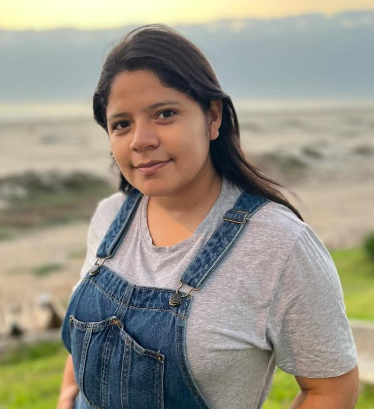

Hi, I'm Joseth 👩🏻💻
Web Developer
Turning Ideas into digital experiences.

Turning Ideas into digital experiences.
Web developer and bachelor in Education with a specialization in Foreign Languages. Her expertise in HTML, CSS, JavaScript, Python, Git, GitHub, and Figma has enabled her to create modern and cutting-edge web applications focused on enhancing user experience. She possesses skills such as adaptability, teamwork, assertive communication, and problem-solving. Motivated by continuous learning, as technological innovation never stops.
Laboratoria Bootcamp
2024
Pedro Ruiz Gallo National University
2017-2022
josethchuzon@gmail.com
Chiclayo - Perú